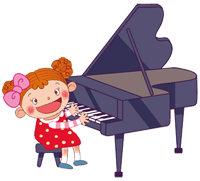
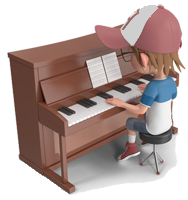

Piano criado por
Keith William Horwood
... Som de
Piano
Órgão
Violão
Dó Ré Mi Fá Sol Lá Si
[C
3
-B
5
]
-
+
(ou use as setas < e > para alterar as oitavas do teclado)
Volume
Tempo
Notas Musicais
A
Lá
B
Si
C
Dó
D
Ré
E
Mi
F
Fá
G
Sol

Tocar 1
Tocar 2
Parar
